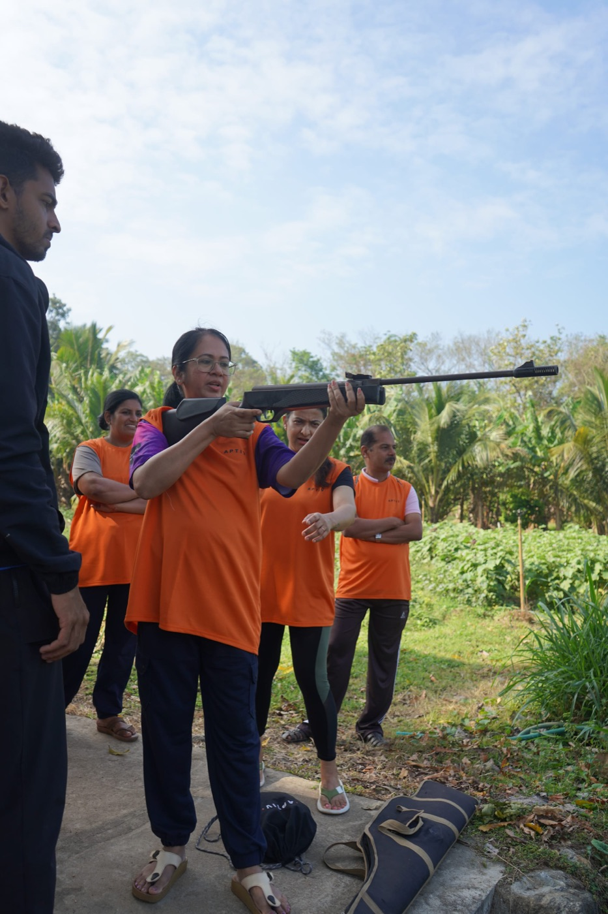

Action & responsibility
Leadership emerges through initiative and owning outcomes.
Experiential learning
Leadership grows when learning moves beyond the classroom. An immersive outdoor leadership programme where students practise teamwork, resilience and decision-making in dynamic environments.

Our philosophy
Outbound Training is rooted in a simple cycle: take action, make sense of the experience, and carry the learning into real life. Challenges surface leadership habits and team dynamics that are difficult to see in a conventional classroom.
Students often enter with assumptions about their abilities. The outdoor environment disrupts routine patterns and challenges participants to engage with uncertainty.
Leadership emerges through initiative and owning outcomes.
Honest communication and mutual trust help teams work well.
New situations reveal strengths that routine rarely brings forward.
Facing uncertainty helps build perseverance and confidence.
What you develop
Outdoor challenges give students a place to practise the ways they lead, collaborate and respond when plans change.
Take initiative, make decisions under pressure and guide a team toward a shared goal. Leadership is practised as influence, collaboration and accountability — not authority.
Work through tasks that depend on the group. Learn how different perspectives, trust and mutual support strengthen team performance.
Analyse a challenge, plan a response and coordinate action with limited time and resources — building analytical thinking and creativity.
Meet unfamiliar situations, stretch beyond familiar routines and recognise strengths that were not evident before.

Activities & training modules
Activities call for courage, balance and focus, helping students work with uncertainty and trust their team.
Structured exercises bring integrity, mutual support and reliance on one another into practice.
Shared challenges require planning, communication and collective problem-solving, much like organisational work.
Participants take turns leading and following, experiencing the responsibility and challenge of both roles.
Mentoring · A defining feature
Faculty mentors and facilitators help students interpret each activity and connect what happened to everyday leadership. They observe participation and offer individual feedback on leadership style, teamwork and decision-making.
Guided reflection questions
What challenges did the team encounter?
How did communication influence outcomes?
What leadership behaviours emerged?
What could have been done differently?
OBT & the LEAD philosophy
“OBT is not merely an outdoor activity — it is a leadership laboratory where students experience the realities of teamwork, decision-making, and resilience in action.”
Understand your behaviours, triggers and capabilities.
Experience both leading and following within a group.
Leave with renewed energy and a more actionable mindset.
Carry useful teamwork and decision-making habits into work.